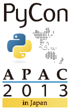

Chefの 環境別設定が 難しい話¶
おまえ、誰よ¶

- 活動:
- ドキュメントツールSphinxのメンテナ
- Sphinx-users.jp 会長
- Python系, PyConJP系, XP系
- 言語:
- C++/C/8086/Python/Rails/chef
所属¶
宣伝: PyCon APAC 2013 in Japan¶

- Schedule:
- カンファレンス: 9月, 14(Sat) 15(Sun)
- スプリント: 9月, 16(Mon)
- Location:
- 東京 新宿
- 参加登録:
- 6月中に開始予定
Chefで使っているツール等¶
- knife-solo-0.3.0.pre4 : soro.rbいらず
- knife-solo_data_bag : knife-soloで暗号化data-bags
- capistrano-paratrooper-chef : chef-solo並列実行
- cookbooks :
- yum, git, hostname, openssh, selinux, sudo, timezone, user, screen
- rbenv, ruby_build, jenkins, memcached, mysql, nginx, postfix
- python-build, mercurial-env, shimizukawa-env
Case1¶
Case1: 配置するファイルが異なる¶
現状:
- chef-serverであればenvironmentで環境別にattributeを設定できる。 About Environments - Chef Docs
- chef-soloだと11.4.4では使えないがchefのリポジトリ上では対応済みらしい。 CHEF-3356 Adds support for environments when running under chef-solo
Case2¶
Case2: 実行したいrun_listが異なる¶
現状:
- chef-serverであればrole定義内のenv_run_listが使える。 About Environments - Chef Docs
- chef-soloだと11.4.4では使えないがchefのリポジトリ上では対応済みらしい。 CHEF-3356 Adds support for environments when running under chef-solo
Case3¶
Case3: ユーザーのssh設定が異なる¶
現状:
- user作成レシピはcommunityやgithubのものを含めてたくさんあるがenvironmentには対応していないし、chef-soloで使えないuserレシピが多い
Case4¶
Case4: 自作cookbookを環境対応したい¶
例:
- /etc/hostsの内容を細かく制御したい
- iptablesのルールを細かく制御したい
でも既存のcookbookではenvironmentに対応していないものが多い
Case4: 自作cookbookを環境対応したい¶
無いなら自分で作るしか！！
- でも私はchef-soloユーザー
- chef_environmentは chef-solo 11.4.4では使えない
- node.my_environment を持たせて頑張ってみた
Chef Docs 推奨のデータ構造¶
1 2 3 4 5 6 7 8 9 10 11 12 13 14 15 16 | {
"id": "www",
"ssh_keys": {
"production": [
"ssh-rsa AAAB3Scw....",
"ssh-rsa AAA2GsCn....",
...
],
"staging": [
...
],
"develop": [
...
]
}
}
|
より細かく制御できる構造¶
1 2 3 4 5 6 7 8 9 10 11 12 13 14 15 16 17 18 19 20 21 22 23 24 25 26 | {
"id": "www",
"ssh_keys": [
{
"envnode": [
"production/*",
"staging/*",
"develop/*"
],
"keys": [
"ssh-rsa AAAB3Scw...."
]
}
{
"envnode": [
"production/node1",
"production/node2",
"staging/*",
],
"keys": [
"ssh-rsa AAA2GsCn....",
...
]
}
]
}
|